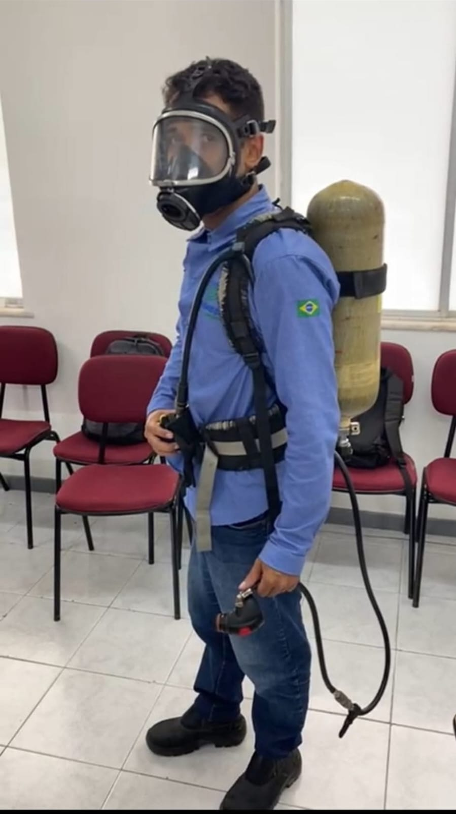
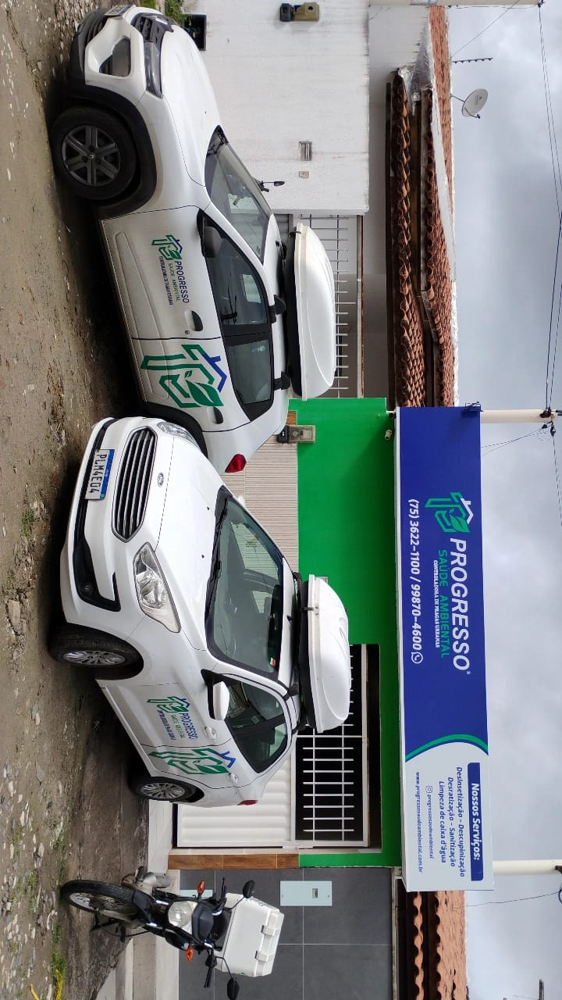

Atuação responsável
Rotinas alinhadas aos requisitos dos órgãos regulamentadores e atenção a cada ambiente.
Controle de pragas urbanas e limpeza de caixa d’água com equipe qualificada, logística própria e atendimento em toda a Bahia e Sergipe.

Do primeiro sinal à prevenção contínua, a Progresso avalia o ambiente e indica o tratamento mais adequado para cada necessidade.
Proteção completa
Tratamentos específicos para controlar insetos, roedores, cupins, mosquitos e moscas em residências, condomínios, comércios e indústrias.

Com sede estruturada em Feira de Santana e logística própria, a Progresso está estrategicamente posicionada para atender diferentes regiões da Bahia e de Sergipe.
Rotinas alinhadas aos requisitos dos órgãos regulamentadores e atenção a cada ambiente.
Frota identificada, equipamentos adequados e equipe preparada para o atendimento.
Planos para residências, condomínios, comércios, empresas e indústrias.
Cada ambiente exige um olhar diferente. A avaliação considera o uso do local, os pontos de acesso e a rotina de quem vive ou trabalha ali.
Mais tranquilidade para sua família, com atenção à rotina da casa.
Cuidado com áreas comuns, reservatórios e pontos críticos.
Planejamento para proteger a operação e preservar o ambiente.
Controle direcionado para locais de maior circulação e exigência.
Conheça um pouco da rotina, do treinamento e da estrutura que sustentam nosso trabalho.

A Progresso Saúde Ambiental nasceu em janeiro de 2020, em Feira de Santana, diante da necessidade de unir qualificação, técnica e experiência no controle de pragas.
Desde então, construímos relações pautadas pela ética com clientes, colaboradores e fornecedores — porque proteger um ambiente também é cuidar das pessoas que fazem parte dele.
Fale com a nossa equipe
Nossa localização e estrutura logística facilitam o atendimento na capital, no interior e em diferentes regiões dos dois estados.
Consultar minha cidadeSe a sua dúvida não estiver aqui, fale com nossa equipe. Vamos entender o seu caso e orientar o próximo passo.
Conversar agoraSim. A Progresso atende residências, condomínios, comércios, empresas e indústrias, com avaliação adequada ao perfil de cada ambiente.
Entre em contato pelo WhatsApp e conte qual serviço precisa, o tipo de local e a cidade. Nossa equipe reúne as informações necessárias para orientar a avaliação.
Atendemos Feira de Santana, Salvador e outras cidades da Bahia e de Sergipe, conforme a programação operacional. Consulte sua localização com nossa equipe.
Não. O método depende da praga, do nível de atividade e das características do local. Por isso, o diagnóstico do ambiente é uma etapa importante do atendimento.